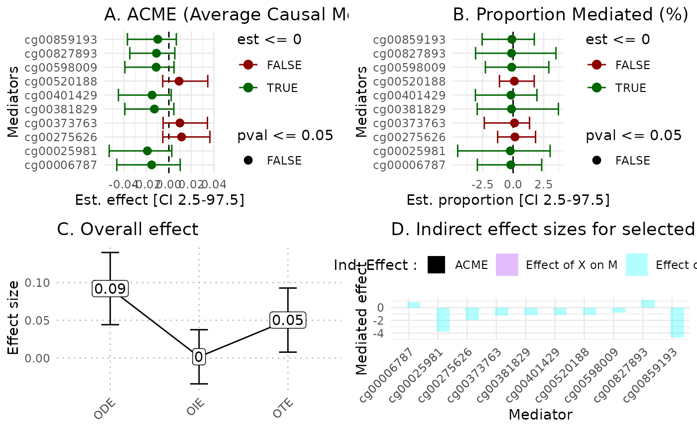

hdmax2 application for univariate exposome
Florence Pittion, Magali Richard, Olivier Francois
January, 2024
hdmax2_univariate.RmdIntroduction
The {} package is designed to accept exposure \(X\) consisting of univariate data, which can be continuous, binary, as well as multivariate exposomes (which includes categorical variables).
In this vignette, we treat the univariate example.
To install the latest version of hdmax2, use the github repository
#devtools::install_github("bcm-uga/hdmax2")Simulated dataset
We simulated 100 samples and 500 potential mediators, with various type of exposures (continuous or binary) and outcomes (continuous or binary). For this example we will use a binary exposure, a continuous outcome and two covariates (age and gender).
We will define the K number of estimated latent factors with a PCA and elbow procedure apply to screeplot.
simu_data = hdmax2::simu_data
## High dimension mediators
M_matrix = simu_data$M
## Exposures
X_matrix = simu_data$X_binary
## Outcomes
Y_matrix = simu_data$Y_continuous
## Covariates
age = simu_data$age
gender = simu_data$gender
covar = cbind(age, gender)
## Number of Latent factore estimation
pc <- prcomp(M_matrix)
plot((pc$sdev^2/sum(pc$sdev))[1:10],
type = "b",
xlab = 'Principal Component',
ylab = "Explained variance")
K=5 #pca conclusion : it is better to select too many factors that too fewFirst use case binary exposure and continuous outcome
STEP 1: Run association studies
The run_AS function is applied to estimate the effects of exposure \(X\) on a matrix \(M\) of potential mediators, and the effect of each potential mediators on outcome \(Y\). Covariables can be included.
hdmax2_step1 = hdmax2::run_AS(X = X_matrix ,
Y = Y_matrix,
M = M_matrix,
K = K,
covar = covar)
#> [1] "The exposure argument is a vector."
#> [1] "The outcome argument is a vector."
#> [1] "The outcome argument is numeric"
#> [1] "Potential mediators matrix is actually a matrix"
#> [1] "provided K = 5"
#> [1] "K value has been transformed as integer"
#> [1] "The input exposome is continuous or binary"
#> [1] "The outcome vector is numeric and DON'T contains only 0s and 1s, it is assimilated as continous variable."
#> [1] "Running first regression with univariate explanatory variable."
#> [1] "Running second regression."
#> [1] "Running max-squared test."
#> [1] "Not generating max2 pvalues for each explanatory variable."Selection of a subset of mediators
Step 1 provides an object which contains results from the two regression (pvalues, fscores, zscores), latent factor estimation from first regression, function inputs, and more important max-squared test pvalues results. This last result allow to select mediators which user’s choosen method. For this example we selected top ten of more significant pvalues from max-squared test.
## Selecting top 10 mediators
## top 10 selecting mediators
mediators_top10 = M_matrix[,names(sort(hdmax2_step1$max2_pvalues)[1:10])]
head(mediators_top10)
#> cg00401429 cg00025981 cg00827893 cg00275626 cg00381829 cg00373763
#> GSM1051525 0.7951180 0.05260918 0.7893376 0.8825254 0.8600816 0.7179983
#> GSM1051526 0.9063903 0.04054604 0.8024538 0.8929263 0.8951136 0.7129662
#> GSM1051527 0.8334925 0.05176339 0.8211777 0.8881366 0.8925196 0.7030927
#> GSM1051528 0.8725825 0.05689405 0.8078479 0.8740031 0.9029140 0.7402126
#> GSM1051529 0.8400158 0.05310491 0.8118859 0.8851656 0.8902038 0.7365306
#> GSM1051530 0.8880954 0.02300723 0.8532763 0.8975370 0.8936008 0.7475968
#> cg00859193 cg00598009 cg00520188 cg00006787
#> GSM1051525 0.05687721 0.7906143 0.6668338 0.7611450
#> GSM1051526 0.06305496 0.7852755 0.5652531 0.7439679
#> GSM1051527 0.06095380 0.7729195 0.6743901 0.7724723
#> GSM1051528 0.05349454 0.7429481 0.6778167 0.7359192
#> GSM1051529 0.06107702 0.7201939 0.6794481 0.7725952
#> GSM1051530 0.03154556 0.8882096 0.6829760 0.8459956STEP 2
The function estimate_effect estimate the individual indirect effect of mediators, but also overall effects of selected mediators.
object = hdmax2_step1
m = mediators_top10
hdmax2_step2 = hdmax2::estimate_effect(object = object,
m = m)
#> [1] "Estimating indirect effect for univariate exposome."
#> [1] "The input exposome is continuous or binary"
#> [1] "Generate regression 1 for continuous or binary exposure and mediator 1"
#> [1] "Generate regression 2 for continuous outcome and mediator 1"
#> [1] "Generate regression 1 for continuous or binary exposure and mediator 2"
#> [1] "Generate regression 2 for continuous outcome and mediator 2"
#> [1] "Generate regression 1 for continuous or binary exposure and mediator 3"
#> [1] "Generate regression 2 for continuous outcome and mediator 3"
#> [1] "Generate regression 1 for continuous or binary exposure and mediator 4"
#> [1] "Generate regression 2 for continuous outcome and mediator 4"
#> [1] "Generate regression 1 for continuous or binary exposure and mediator 5"
#> [1] "Generate regression 2 for continuous outcome and mediator 5"
#> [1] "Generate regression 1 for continuous or binary exposure and mediator 6"
#> [1] "Generate regression 2 for continuous outcome and mediator 6"
#> [1] "Generate regression 1 for continuous or binary exposure and mediator 7"
#> [1] "Generate regression 2 for continuous outcome and mediator 7"
#> [1] "Generate regression 1 for continuous or binary exposure and mediator 8"
#> [1] "Generate regression 2 for continuous outcome and mediator 8"
#> [1] "Generate regression 1 for continuous or binary exposure and mediator 9"
#> [1] "Generate regression 2 for continuous outcome and mediator 9"
#> [1] "Generate regression 1 for continuous or binary exposure and mediator 10"
#> [1] "Generate regression 2 for continuous outcome and mediator 10"
#> [1] "Computing ODE and OTE for continuous outcome."Plot
We propose a set of plots which include:
Forest plot of mediators ACME
Forest plot of mediators PM
Comparison of ODE, OIE and OTE
Mediators effect size representation
library(ggplot2)
hdmax2::plot_hdmax2(hdmax2_step2)
#> [1] "hdmax2 plot for univariate exposome"
#> TableGrob (2 x 2) "arrange": 4 grobs
#> z cells name grob
#> 1 1 (1-1,1-1) arrange gtable[layout]
#> 2 2 (1-1,2-2) arrange gtable[layout]
#> 3 3 (2-2,1-1) arrange gtable[layout]
#> 4 4 (2-2,2-2) arrange gtable[layout]We obtained one set of 4 plots:
A Estimates of indirect effect (ACME) and B proportions of mediated effect (PM) for the top 10 mediators. The effect estimate is represented by a dot and its 95% CI by the bar. Symbols correspond to the significance cut off of 5% (square for p-value \(\geq 0.05\), circle p-value \(< 0.05\)). Colors correspond to the sign of the effect (green for estimated effect \(\leq 0\) , red for estimated effect \(> 0\)).
C Effect sizes of Overall Direct Effect (ODE), Overall Indirect Effect (OIE) and Overall Total Effect (OTE). Error bars correspond to standard deviation (ODE and OTE) or confidence interval (OIE).
D Indirect effect sizes for the selected mediators. Black corresponds to the ACME, violet to the effect of exposure X on mediator M in the model \(X \sim M\), and blue corresponds to the effect of mediator M on outcome Y in the model \(Y \sim M + X\).
##TODO comments about plots
sessionInfo()
#> R version 4.3.3 (2024-02-29)
#> Platform: x86_64-pc-linux-gnu (64-bit)
#> Running under: Ubuntu 22.04.4 LTS
#>
#> Matrix products: default
#> BLAS: /usr/lib/x86_64-linux-gnu/openblas-pthread/libblas.so.3
#> LAPACK: /usr/lib/x86_64-linux-gnu/openblas-pthread/libopenblasp-r0.3.20.so; LAPACK version 3.10.0
#>
#> locale:
#> [1] LC_CTYPE=C.UTF-8 LC_NUMERIC=C LC_TIME=C.UTF-8
#> [4] LC_COLLATE=C.UTF-8 LC_MONETARY=C.UTF-8 LC_MESSAGES=C.UTF-8
#> [7] LC_PAPER=C.UTF-8 LC_NAME=C LC_ADDRESS=C
#> [10] LC_TELEPHONE=C LC_MEASUREMENT=C.UTF-8 LC_IDENTIFICATION=C
#>
#> time zone: UTC
#> tzcode source: system (glibc)
#>
#> attached base packages:
#> [1] stats graphics grDevices utils datasets methods base
#>
#> other attached packages:
#> [1] ggplot2_3.5.0
#>
#> loaded via a namespace (and not attached):
#> [1] gtable_0.3.4 xfun_0.42 bslib_0.6.1 htmlwidgets_1.6.4
#> [5] lattice_0.22-5 vctrs_0.6.5 tools_4.3.3 generics_0.1.3
#> [9] sandwich_3.1-0 tibble_3.2.1 fansi_1.0.6 highr_0.10
#> [13] cluster_2.1.6 pkgconfig_2.0.3 Matrix_1.6-5 data.table_1.15.2
#> [17] checkmate_2.3.1 desc_1.4.3 lifecycle_1.0.4 farver_2.1.1
#> [21] compiler_4.3.3 stringr_1.5.1 hdmax2_2.0.0.9000 textshaping_0.3.7
#> [25] prettydoc_0.4.1 munsell_0.5.0 mediation_4.5.0 htmltools_0.5.7
#> [29] sass_0.4.9 yaml_2.3.8 htmlTable_2.4.2 Formula_1.2-5
#> [33] pillar_1.9.0 pkgdown_2.0.7 nloptr_2.0.3 jquerylib_0.1.4
#> [37] MASS_7.3-60.0.1 cachem_1.0.8 Hmisc_5.1-2 rpart_4.1.23
#> [41] boot_1.3-29 nlme_3.1-164 tidyselect_1.2.1 digest_0.6.35
#> [45] mvtnorm_1.2-4 stringi_1.8.3 dplyr_1.1.4 purrr_1.0.2
#> [49] labeling_0.4.3 splines_4.3.3 fastmap_1.1.1 grid_4.3.3
#> [53] colorspace_2.1-0 cli_3.6.2 magrittr_2.0.3 base64enc_0.1-3
#> [57] utf8_1.2.4 withr_3.0.0 foreign_0.8-86 scales_1.3.0
#> [61] backports_1.4.1 rmarkdown_2.26 nnet_7.3-19 lme4_1.1-35.1
#> [65] gridExtra_2.3 zoo_1.8-12 ragg_1.3.0 memoise_2.0.1
#> [69] evaluate_0.23 lpSolve_5.6.20 knitr_1.45 rlang_1.1.3
#> [73] Rcpp_1.0.12 glue_1.7.0 rstudioapi_0.15.0 minqa_1.2.6
#> [77] jsonlite_1.8.8 R6_2.5.1 systemfonts_1.0.6 fs_1.6.3